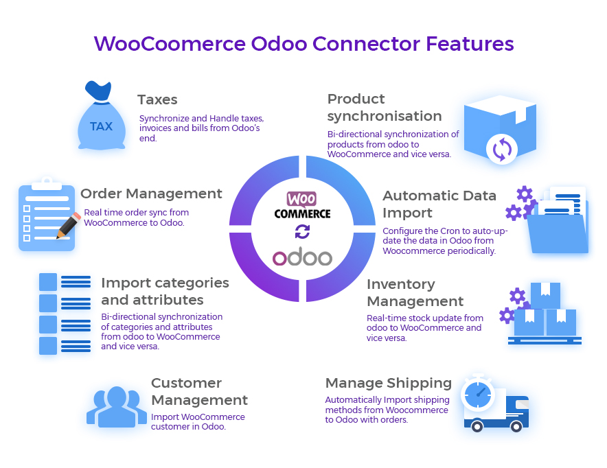
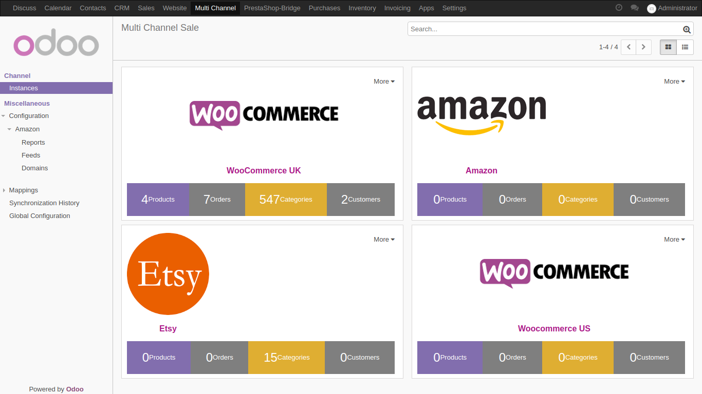
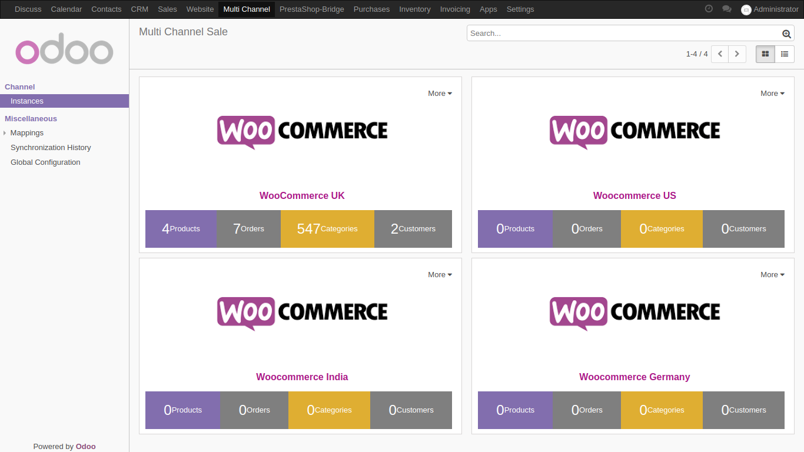

WooCommerce Odoo Connector
Employ Effective Management System To Your Evergrowing Woocommerce store with Odoo Woocommerce Module. Integrate your Woocommerce shop with Odoo and manage all the operations at Odoo's end.
Import/export products, product categories, product attributes from Woocommerce to Odoo and vice-versa. Real-time orders and stock synchronization from Woocommerce to Odoo. You can also set the data to automatically updated in Odoo periodically. Operate and lead your Woocommerce store operations using Odoo, from product management to delivery.
Moreover, you also get Multi-Channel sale Module with this module which is the base module to integrate different e-commerce channels with Odoo. You can connect variious store like Amazon, e-Bay, Magento etc with Odoo and manage them simultaneously.
Dashboard
A very skillfully designed dashboard to give you all the necessary information at once to manage your E-commerce store using Odoo.
See the number of products and product categories present currently on your Woocommerce store.

Overview the total number of orders placed along with the total number of customers in your Woocommerce shop.
You can also overview details for multiple created Woocommerce instances from the dashboard to manage them accordingly.
Not just that, you can integrate many other e-commerce channels/marketplaces to Odoo like Amazon, eBay, Magento etc. and manage all of them from the same dashboard.
Order Management
Manage the Woocommerce store using Odoo and efficiently manage orders placed on Woocommerce at Odoo's end.
Forget manually importing Orders to Odoo from Woocommerce. The orders can be imported from Woocommerce to Odoo with one click.

Real-time automatic synchronization of the orders placed on Woocommerce store to Odoo. Note: Once you have purchased the module, please send a request to the support team to provide the code to activate real-time order synchronization feature from WooCommerce to Odoo.
The order status can be updated on Odoo's end and it would automatically reflect at Woocommerce's end and vice-versa.
Similarly, changes made in product stock after an order is placed on Woocommerce store are also reflected in the Odoo in real time.
Products Management
Integrate the Woocommerce store with Odoo and Just create and export the Products and product categories from Odoo to your Woocommerce store.
Utilize bidirectional sync feature to import Products and product categories from Woocommerce to Odoo and manage your Woocommerce store using Odoo.

You can add products and product categories on either Odoo or Woocommerce and sync them both from Woocommerce to Odoo and vice-versa to manage Woocommerce store using Odoo.
Moreover, Import/Export product attributes from Woocommerce to Odoo and vice-versa. Update the product information on the Odoo back-end and sync to Woocommerce.
When an order placed for a product at Woocommerce end then stock of the respective product gets updated in real-time at Odoo end. Also, when the stock of a product gets updated at Odoo end same updates in real-time at Woocommerce end.
Customer Invoices, Reports And Payments
Manage Customer Invoices, Reports And Payments With Woocommerce Odoo Bridge
Generate and handle Woocommerce customer bills and sales reports at Odoo backend with Woocommerce Odoo Bridge.
No need to maintain separate records for the sales and purchase orders. The invoicing menu in Odoo does that for you in the same tab to help you oversee every operation.
Manage invoices of sales orders, generate credit notes and sales reports and track payments details for every customer from simple clicks to effectively manage the bills for Woocommerce store using Odoo.

An entire menu to fulfill your requirements for invoicing and managing bills for your purchase orders so you can effortlessly manage your Woocommerce store using Odoo.
Moreover, generate and manage vendor bills, taxes, credit notes and much more of the purchase orders.
Inventory Management
The Odoo inventory App allows you to track and effectively manage warehouses across all locations to manage inventory operations for your Woocommerce in Odoo.

Manage product stock and stock operations across all warehouses and maintain a streamlined flow of products for your Woocommerce customers using Odoo.
Efficiently track the movement of the products to Manage entire Woocommerce store easily using Odoo.
Multiple Instances
Handling multiple website on Woocommerce exponentially increases the managing and maintenance workload.
Odoo offers a simple yet powerful backend too manage all your Woocommerce instances from single screen.
You can easily integrate multiple instances of Woocommerce store in Odoo and manage them simultaneously.

All the synchronized Instances show up on the Odoo Multi-Channel Dashboard so you can get a quick overview.
Note: You can integrate upto 3 instances of Woocommerce store with Odoo. To integrate more than 3 instances please contact our Support Team here.
Map And Import Taxes, Payment and Carrier/Shipping Methods
You can easily set up taxes, carrier/shipping methods and payment methods in Odoo (if not already saved).
Once saved, they will be automatically imported to the Odoo while synchronizing orders.
Other Connected Channels:
Complimentary Support
You will get 90 days free support for installation, configuration, or reinstallation (not including data recovery) or any type of issue related to this module.